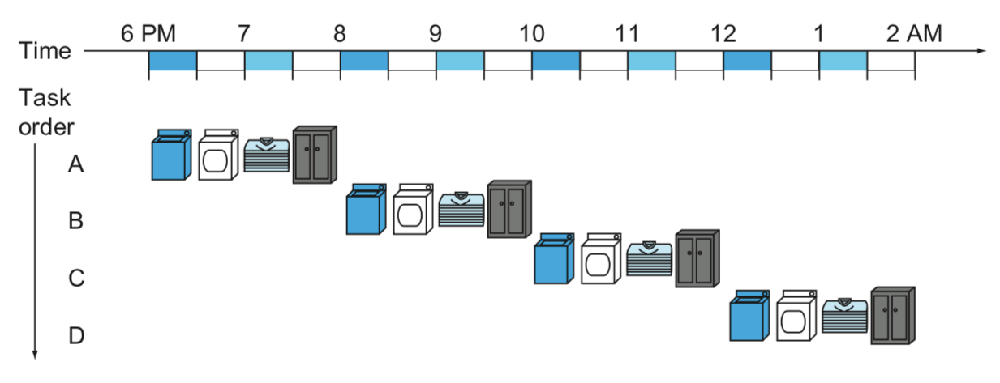
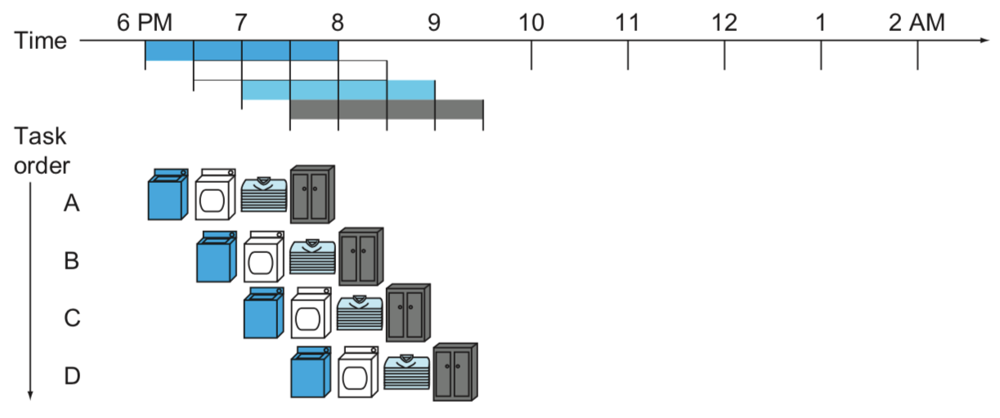
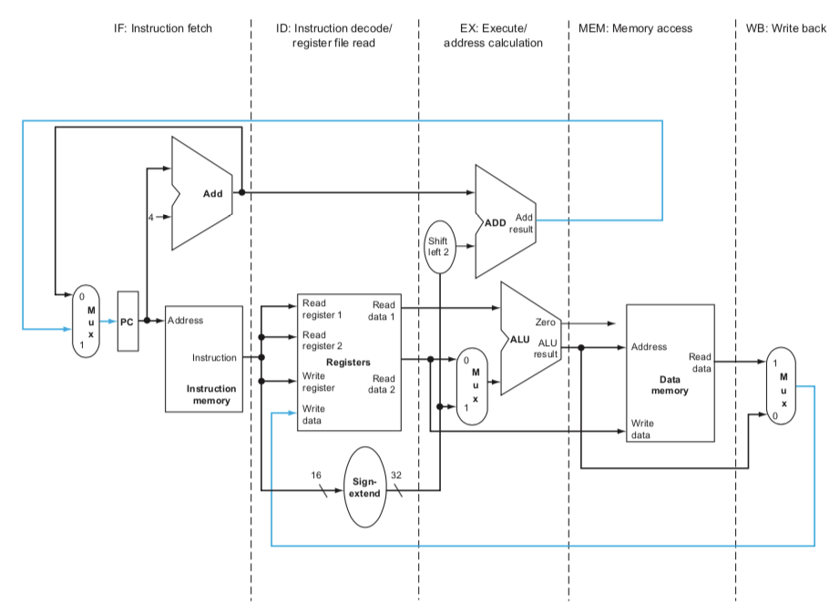
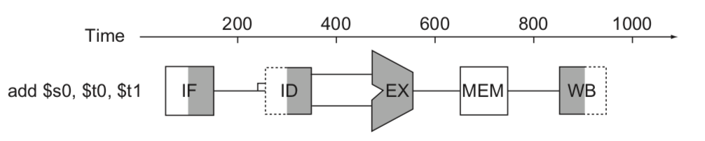
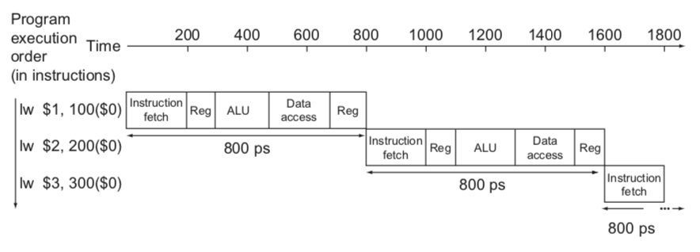
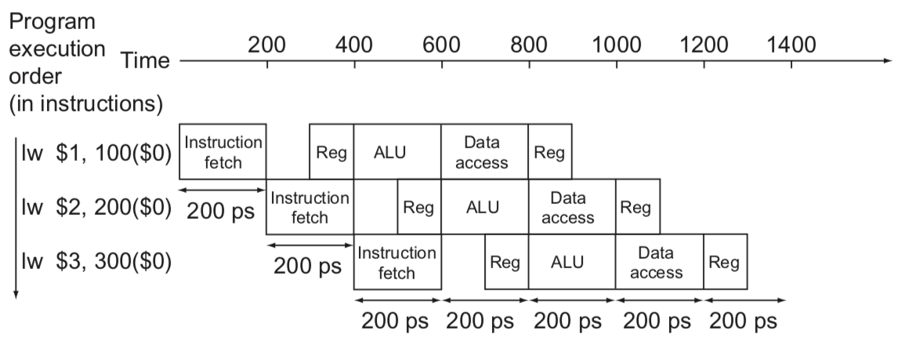

An Overview of Pipelining(1)
앞서 만든 프로세서 회로는 실제로는 거의 사용되지 않는다. 4.3의 마지막 단락은 다음과 같았다.
PC는 State Element이고, 나머지는 Combinational Element이기 때문에 전체 회로를 도는 데에는 1 Clock이 소요(CPI = 1)되어야 한다. 즉, 이 회로가 도는 속도에 따라 프로세서의 클럭 주기가 결정된다고 할 수 있다.
CPI가 1인 프로세서는 한 클럭에 한 명령어가 실행된다는 것이고, 이보다 더 효율적이려면 한 클럭에 여러 명령어가 동시에 수행되어야 한다. 이걸 가능하게 하는 것이 파이프라인이며, 주저리주저리 설명하면 괜히 어렵게 들리니까 어떤 느낌인지 비유로 아래에서 설명하겠다.
Pipelining Analogy
강의 교재에서는 파이프라인을 설명하기 위한 비유로 빨래하는 과정을 이야기한다. 빨래를 A, B, C, D로 총 네 번을 수행해야 하고 세탁 -> 건조 -> 빨래 개기 -> 옷장에 넣기 단계로 나뉜다고 하자. 각 단계는 0.5 시간 소요된다. 파이프라인이 적용되지 않은 경우, 빨래는 아래 이미지 (강의 교재 figure 4.25) 와 같이 이루어진다.

세탁 ———> 옷장을 총 네 번 반복한다. 그러면 총 8시간이 걸리게 된다. 마치 우리가 지금까지 짠 회로와 같이 명령어 4개를 실행하면 Instruction Fetch ---> ... 단계를 총 4번 도는 것과 같다.
파이프라인은 "A 빨래를 건조기에 돌리는 동안 일이 끝난 세탁기에 B 빨래를 돌리고 있자!"라고 생각하면 된다. 그걸 이미지로 표현한 것이 아래 이미지 (강의 교재 figure 4.25) 이다.

그러면 4 세트의 빨래를 돌리는 데 걸리는 시간을 3.5시간으로 줄일 수 있다. 파이프라인을 회로에 적용하려면 빨래, 건조 등과 같이 회로 안에서 역할 별로 단계(stage)를 나누어 놓아야 한다.
MIPS Pipeline
파이프라인을 적용하기 위해 우리는 회로를 총 다섯 단계로 나눌 것이다.
- IF(Instruction Fetch) : 메모리에서 Instruction을 가져옴
- ID(Instruction Decode) : Instruction을 해석하고 레지스터에서 값을 읽음
- EX(Execute) : 연산 수행, 주소 계산
- MEM(Memory) : 메모리에 접근
- WB(Write Back) : 결과를 레지스터에 저장(write)

위 이미지 (강의 교재 figure 4.33) 는 단계별로 회로의 어느 부분인지 표시한 것이다. 아래 (강의 교재 figure 4.28) 는 이전에 세탁 단계를 나타내듯 그림으로 파이프라인 단계를 표시한 것이다.

여기서 오른쪽이 어두운 부분은 Read를 수행하는 것이고, 왼쪽이 어두운 부분은 Write를 수행하는 것으로 생각하면 된다. 그 외에 전체 색칠은 수행하는 회로, 색칠되지 않은 것은 이 명령에서 수행하지 않는 회로이다. 이미지의 instruction은 add이므로 MEM 단계는 수행되지 않는다고 해석할 수 있다.
Pipeline Performance
파이프라인을 적용했을 때 얼마나 성능이 향상되는지 살펴보자. 그 전에 상황을 다음과 같이 가정한다.
| Instruction class | IF(Instruction fetch) | ID(Register read) | EX(ALU operation) | MEM(Data access) | WB(Register write) | Total time |
|---|---|---|---|---|---|---|
| Load word (lw) | 200 ps | 100 ps | 200 ps | 200 ps | 100 ps | 800 ps |
| Store word (sw) | 200 ps | 100 ps | 200 ps | 200 ps | 700 ps | |
| R-format (add, sub, AND, OR, slt) |
200 ps | 100 ps | 200 ps | 100 ps | 600 ps | |
| Branch (beq) | 200 ps | 100 ps | 200 ps | 500 ps |
레지스터 Read/Write는 100ps, 나머지는 200 ps가 소요된다. 이제 본격적으로 파이프라인이 적용된 Datapath와 그렇지 않은(Single-cycle) Datapath를 비교해보자.

우선, Non-pipelined Datapath이다. 단순히 모든 단계를 순차적으로 실행하며 한 명령이 전부 끝나고 다음 명령이 수행되는 방식이다. 한 Instruction 당 800ps가 소모되고 n 개의 instruction이 있으면 800n ps가 걸린다. 한 클럭에 모든 단계가 순차적으로 수행되어야 하므로 클럭 사이클은 800ps 이상이어야 한다.

이번에는 Pipelined Datapath이다. 여기서는 200 ps을 한 클럭으로 두고, 클럭마다 한 단계씩 실행하는데 이렇게 하면 한 Instruction을 수행하는 데 총 1000 ps가 소요된다. 하나만 실행했을 때는 더 느리지만, 파이프라이닝을 하기 때문에 첫 번째 명령이 ID 단계를 수행할 때 동시에 두 번째 명령의 IF 단계를 수행한다. 이런 방식으로 세 Instruction을 한 프로세서의 다른 부분에서 동시에 돌리기 때문에 전체 시간은 더 짧아진다. 이 방식으로 n개의 Instruction을 수행하는 데에는 (800 + 200n) ps가 소요된다.
Pipeline Speedup
파이프라인을 통해 얻을 수 있는 속도 향상을 알아보자. 만약 모든 단계가 같은 시간을 소요하고 있다면 다음 식이 성립한다.
(Instruction 간의 시간 간격pipelined)
= (Instruction 간의 시간 간격nonpipelined) / (단계의 수)
파이프라인을 사용하면 더 짧은 간격으로 Instruction을 실행할 수 있으므로 속도가 향상된다. 각 단계 별 소요 시간이 차이가 난다면 속도가 상대적으로 조금만 향상될 것이다.
파이프라이닝은 Throughput을 향상시키는 방식으로 속도를 향상시킨다. 그렇지만 Latency(한 Instruction의 실행 시간)가 증가하는데, 우리는 실제로 수백만 ~ 수십억 Instruction을 실행해야 하기 때문에 이런 식으로 Throughput을 늘림으로서 더 시간을 아낄 수 있다.
Header Image created by Freepik